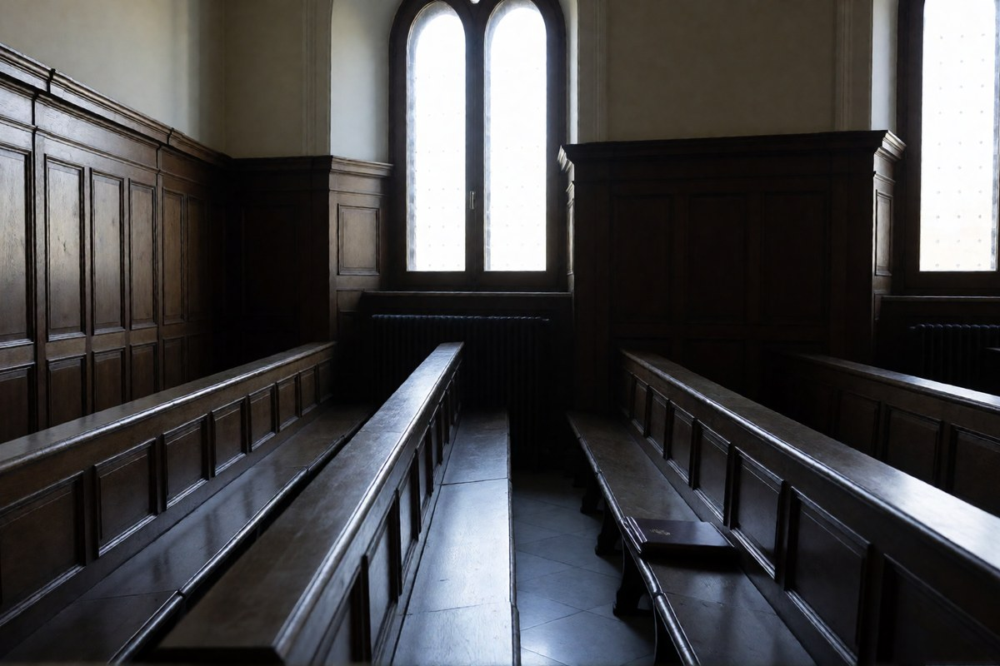

Cronaca · 20 novembre 2026
Omicidio di Willy Monteiro, ergastolo definitivo per Gabriele Bianchi

La Cassazione ha respinto il ricorso della difesa: dopo sei anni e sei processi si chiude la vicenda giudiziaria per il pestaggio di Colleferro in cui morì un ragazzo di 21 anni.
di Franco Zanghì
Gabriele Bianchi resterà in carcere per tutta la vita. Venerdì 20 novembre la prima sezione penale della Corte di cassazione ha reso definitivo il suo ergastolo per l'omicidio di Willy Monteiro Duarte, il ragazzo di 21 anni ucciso di botte a Colleferro, in provincia di Roma, nella notte fra il 5 e il 6 settembre del 2020.
I giudici hanno respinto il ricorso della difesa, come chiedeva la procura generale. Per l'accusa la sentenza d'appello «ha valutato tutto, il dolo, la sua intensità». Con questa decisione, scrive l'ANSA, la vicenda giudiziaria si chiude: sei processi, fra i vari gradi di giudizio.
Quei cinquanta secondi
Willy viveva a Paliano, in provincia di Frosinone. Quella notte, davanti a un locale nella zona della movida di Colleferro, era intervenuto per difendere un amico coinvolto in una lite.
Secondo la ricostruzione accolta dai giudici il pestaggio durò cinquanta secondi. Gabriele Bianchi, esperto di arti marziali miste, colpì per primo, con un calcio al petto. Poi arrivarono gli altri. Willy continuò a essere colpito anche quando era a terra. Morì poco dopo.
Le quattro condanne
Per quella notte sono state condannate quattro persone. L'ergastolo per il fratello di Gabriele era già definitivo, e gli altri due imputati hanno avuto 23 e 21 anni di carcere.
Il percorso processuale di Gabriele Bianchi è stato il più lungo: ergastolo in primo grado, 24 anni nel primo appello, 28 nel secondo, di nuovo l'ergastolo nell'appello ter dell'8 giugno di quest'anno. Venerdì l'ultima parola.
La medaglia d'oro
Un mese dopo la morte di Willy il presidente della Repubblica Sergio Mattarella gli conferì la medaglia d'oro al valor civile alla memoria. Nella motivazione, ricorda il Fatto Quotidiano, lo definisce «luminoso esempio» di generosità e di coraggio.
L'avvocato della famiglia, all'Adnkronos, ha commentato: «Ci aspettavamo questa decisione, è la sentenza giusta».
Il commento dell'autore
Sei anni e sei processi sono tanti, soprattutto per una madre e un padre che in ogni aula hanno dovuto riascoltare come è morto il loro figlio. Ma la giustizia ha fatto il suo lavoro fino in fondo, con tutte le garanzie, anche per chi ha ucciso. Una condanna definitiva pesa di più proprio perché nessuno potrà dire che è stata frettolosa.
Resta Willy. Un ragazzo che vide un amico in difficoltà e non si girò dall'altra parte. Questo, più di ogni sentenza, è quello che conviene insegnare ai propri figli.
Fonti
- ANSA, la decisione della prima sezione penale della Corte di cassazione, 20 novembre 2026
- Tgcom24, «Omicidio Willy, ergastolo definitivo per Gabriele Bianchi», 20 novembre 2026
- Frosinone Today, «Omicidio Willy, ergastolo definitivo per Gabriele Bianchi: la Cassazione respinge il ricorso», 20 novembre 2026
- Il Tempo, «Omicidio Willy, definitiva la condanna all'ergastolo per Gabriele Bianchi», 20 novembre 2026
- Il Post, «Gabriele Bianchi è stato condannato all'ergastolo per l'omicidio di Willy Monteiro Duarte nel terzo processo d'appello», 8 giugno 2026
- Il Fatto Quotidiano, la motivazione della medaglia d'oro al valor civile alla memoria; Adnkronos, le parole dell'avvocato della famiglia
Le motivazioni della sentenza di cassazione non sono ancora depositate: il dispositivo è quello letto in udienza il 20 novembre 2026.